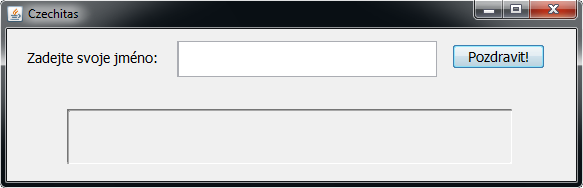
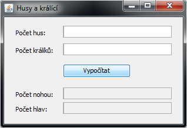
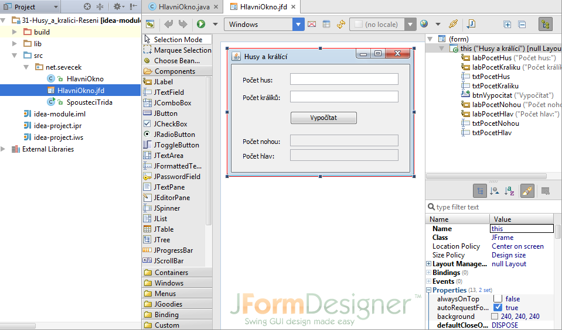

Lekce 03
Poprvé jsme vytvářeli plnohodnotné javové aplikace.
Nejprve jsme programovali aplikaci Pozdrav. Uživatel zadá svoje jméno a aplikace ho pozdraví.

Druhá aplikace je velice praktická pomůcka pro zemědělce.
Uživatel zadá počet hus a počet králíků a aplikace mu vypočítá,
kolik mají zvířata na statku nohou a hlav.

Pro návrh uživatelského rozhraní naší aplikace jsme používali
doplněk JFormDesigner pro editor IntelliJ IDEA.

Jde o placený doplněk od jiného výrobce než editor IntelliJ IDEA sám,
proto je nutné použít licenci Czechitas, kterou jste od nás dostali.
Pokud byste ji už neměli, ozvěte se Kamilovi.
Materiály z lekce
Materiály jsou ke stažení zde: lekce03.7z
Archív si stáhněte, například na plochu. Celý jej rozbalte přímo do C:\.
Archív totiž už obsahuje složku
Java-Training a materiály se tím pádem vloží na to správné místo do
C:\Java-Training\Projects\Lekce03.